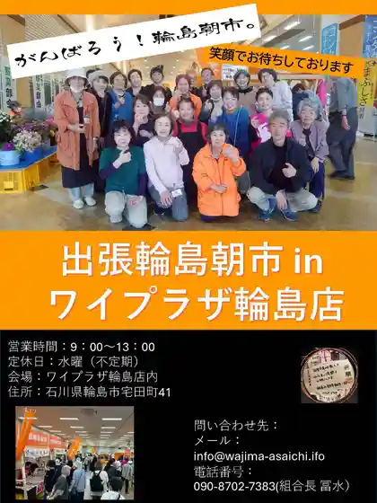
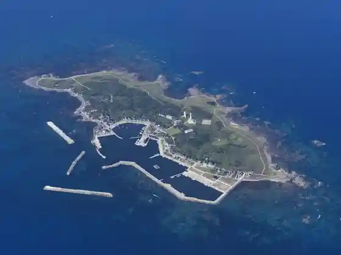
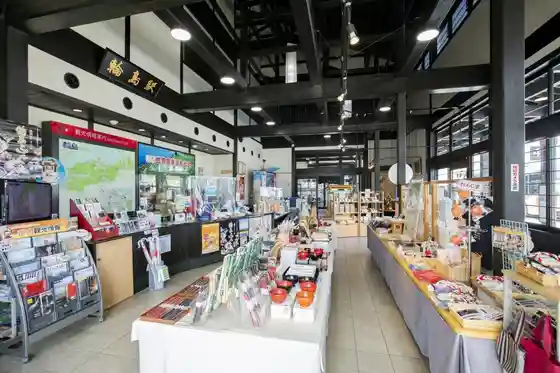
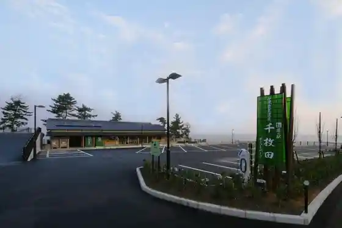

Hakumai Senmaida
Wajima, Ishikawa · 0768-23-1146 · Official / source link
Shutcho Wajima Asa City in Wai Plaza Wajima Mise
Wajima, Ishikawa · 0768-22-8733 · Official / source link

Hegura Shima
Wajima, Ishikawa · 0768-23-1146 · Official / source link

Roadside Station Wajima (Furatto Ho Yume)
Wajima, Ishikawa · 0768-22-1503 · Official / source link

Roadside Station Senmaida Pogatto Park Shumatsu Eigyochu
Wajima, Ishikawa · 0768-34-1004 · Official / source link

O Jinjo Taiko (Mei Fune Town)
Wajima, Ishikawa · 0768-34-8282 · Official / source link
Omoto Yama Sojidera So In
Wajima, Ishikawa · 0768-42-0005 · Official / source link
no to Satoyama Airport
Wajima, Ishikawa · 0768-26-2000 · Official / source link
Roadside Station Akagami
Wajima, Ishikawa · 0768-45-1001 · Official / source link
Wajima Tenryo Kuro Shima Chiku
Wajima, Ishikawa · 0768-22-7666 · Official / source link
Kongahama (Naki Suna no Hama)
Wajima, Ishikawa · 0768-42-8720 · Official / source link
Wajima Workshop Nagaya
Wajima, Ishikawa · 0768-23-0011 · Official / source link
Nami no Hana
Wajima, Ishikawa · 0768-32-0408 · Official / source link
Wajima Kiriko Hall Reiwa 6 Nen (2024 Nen) Noto Han Shima Jishin no Eikyo Niyori Tomen no Kan Rinji Kyukanchu
Wajima, Ishikawa · 0768-22-7100 · Official / source link
Tarumi Falls
Wajima, Ishikawa · 0768-32-1331 · Official / source link
So So Ki Coast
Wajima, Ishikawa · 0768-32-0408 · Official / source link
Kan Kaki no Sato Osawa Ue Osawa
Wajima, Ishikawa · 0768-36-2001 · Official / source link
Wajima Nuri Hall 1F no Mi Eigyochu
Wajima, Ishikawa · 0768-22-2155 · Official / source link
Nebuta Onsen Umi Yu Noto no Sho Reiwa 6 Nen (2024 Nen) Noto Han Shima Jishin no Eikyo Niyori Tomen no Kan Kyukanchu
Wajima, Ishikawa · 0768-22-0213 · Official / source link
Kamogaura Sanpomichi
Wajima, Ishikawa · 0768-23-1146 · Official / source link
Noto Monzen Famiriiin Byu Sansetto
Wajima, Ishikawa · 0768-42-2050 · Official / source link
Ishikawaken Wajima Shitsugei Art Museum
Wajima, Ishikawa · 0768-22-9788 · Official / source link
Wajima Nuri
Wajima, Ishikawa · 0768-22-2155 · Official / source link
Wajima Mabushi Oyasu Shikki Workshop
Wajima, Ishikawa · 0768-22-1166 · Official / source link
Monzen Motasupotsu Park
Wajima, Ishikawa · 0768-42-8720 · Official / source link
Sodegahama Campground (GW Kaki no Mi) Reiwa 6 Nen (2024 Nen) Noto Han Shima Jishin no Eikyo Niyori Tomen no Kan Rinji Kyugyochu
Wajima, Ishikawa · 0768-23-1146 · Official / source link
Umi no Eki Roku Mei Kan
Wajima, Ishikawa · 0768-23-0234 · Official / source link
Fukugaana
Wajima, Ishikawa · 0768-32-0408 · Official / source link
Mina Gatsu Seishonen Ryoko Village
Wajima, Ishikawa · 0768-42-1111 · Official / source link
Agishi Hon Sei Tera (Agishikogikuzakura) Reiwa 6 Nen Noto Han Shima Jishin no Eikyo De Haikanteishi Naka
Wajima, Ishikawa · 0768-45-1355 · Official / source link
Seppuntonneru
Wajima, Ishikawa · 0768-32-0408 · Official / source link
Wajima Fugu
Wajima, Ishikawa · 0768-23-1146 · Official / source link
no to Kiriopun Garden 2026
Wajima, Ishikawa · 0768-26-2303 · Official / source link
Wajima Kirimoto
Wajima, Ishikawa · 0768-22-0842 · Official / source link
Saruyama Misaki Lighthouse (Yukiwari Kusa Gunsei Chi)
Wajima, Ishikawa · 0768-42-1111 · Official / source link
Wajima Ekorojii Campground (4/1 10/31) Reiwa 6 Nen (2024 Nen) Noto Han Shima Jishin Hisai no Tame, Tomen no Kan Heisa Toshiteimasu
Wajima, Ishikawa · 0768-36-2065 · Official / source link
Oke Taki
Wajima, Ishikawa · 0768-36-2001 · Official / source link
Ashiyu Yu Raku Sato
Wajima, Ishikawa · 0768-23-1146 · Official / source link
Mina Gatsu Coast
Wajima, Ishikawa · 0768-42-8720 · Official / source link
Noto no Ryojo Ho Center
Wajima, Ishikawa · 0768-26-2555 · Official / source link
Ipponmatsu Sogo Sports Park
Wajima, Ishikawa · 0768-23-1156 · Official / source link
Kyu Kaku Umi Ie House
Wajima, Ishikawa · 0768-43-1135 · Official / source link
Horai Yama Park
Wajima, Ishikawa · 0768-23-1156 · Official / source link
Kowa Shusui (Kowashudo)
Wajima, Ishikawa · 0768-42-8720 · Official / source link
Shippi no Sho Zen no Sato Koryu Kan
Wajima, Ishikawa · 0768-42-3550 · Official / source link
Soto Shu Hasu Ko Tera
Wajima, Ishikawa · 0768-22-0638 · Official / source link
Shigezo Shrine
Wajima, Ishikawa · 0768-22-0695 · Official / source link
Nishi Yoshi Tera Yamamomiji
Wajima, Ishikawa · 0768-23-1146 · Official / source link
Iwakura Tera
Wajima, Ishikawa · 0768-32-0139 · Official / source link
Danjo Taki
Wajima, Ishikawa · 0768-36-2001 · Official / source link
Wajima Culture Hall
Wajima, Ishikawa · 0768-22-7666 · Official / source link
Kuro Shima Tenryo Kitamae Fune Museum
Wajima, Ishikawa · 0768-43-1135 · Official / source link
Sen Karada Jizo
Wajima, Ishikawa · 0768-32-0408 · Official / source link
Shingonshu Kinzo Tera
Wajima, Ishikawa · 0768-32-0277 · Official / source link
Minami So Art Museum
Wajima, Ishikawa · 0768-32-0166 · Official / source link
Ate no Ganso
Wajima, Ishikawa · 0768-42-1545 · Official / source link
Wajima Furusato Taiken Jisshu Kan
Wajima, Ishikawa · 0768-32-1331 · Official / source link
Ishikawaken Kenko Forest
Wajima, Ishikawa · 0768-26-1413 · Official / source link
Shingonshu Tennoji (Shakunage Tera)
Wajima, Ishikawa · 0768-32-0501 · Official / source link
Wajima Marintaun Kyogijo
Wajima, Ishikawa · 0768-22-0350 · Official / source link
Shokuji Tokoro Asa City Sakaba
Wajima, Ishikawa · 0768-22-1120 · Official / source link
Nishibo Coast
Wajima, Ishikawa · 0768-36-2001 · Official / source link
O Shokuji Tokoro Yabu Shimbashi Mise
Wajima, Ishikawa · 0768-22-0006 · Official / source link
Omoto Yama Sojidera So In Zazen Experience
Wajima, Ishikawa · 0768-42-0005 · Official / source link
Iwakura Yama
Wajima, Ishikawa · 0768-32-0408 · Official / source link
So So Ki Tourism Association (Furusato Taiken Jisshu Kan)
Wajima, Ishikawa · 0768-32-0408 · Official / source link
Yorimichi Pakingu (Danjo Taki)
Wajima, Ishikawa · 0768-26-2350 · Official / source link
Takahama Kyoshi Kuhi
Wajima, Ishikawa · 0768-23-1156 · Official / source link
Wajima Workshop Nagaya Sakamoto Shikki Mise
Wajima, Ishikawa · 0768-23-1755 · Official / source link
Shitsu Amyuzumento Nuri Taro Reiwa 6 Nen (2024 Nen) Noto Han Shima Jishin no Eikyo Niyori Tomen no Kan Kyugyochu
Wajima, Ishikawa · 0768-22-6040 · Official / source link
Sumiyoshi Shrine
Wajima, Ishikawa · 0768-22-0656 · Official / source link
Wajima Mae Shrine
Wajima, Ishikawa · 0768-22-0871 · Official / source link
Noto (Kibo no Akari)
Wajima, Ishikawa · Official / source link
Agishikogikuzakura (Agishi Hon Sei Tera) Reiwa 6 Nen Noto Han Shima Jishin no Eikyo De Haikanteishi Naka
Wajima, Ishikawa · 0768-45-1355 · Official / source link
Sakura Taki (Wajima Monzen Town Fukami)
Wajima, Ishikawa · 0768-42-8720 · Official / source link
Hasebe Shinren no Haka
Wajima, Ishikawa · 0768-22-7666 · Official / source link
Yuzu Beshi So Honke Nakaura Ya
Wajima, Ishikawa · 0768-22-0131 · Official / source link
Shokunin Gyararii Chumon (Chumon Shikki Mise)
Wajima, Ishikawa · 0768-22-2721 · Official / source link
San Hebi Yama no Mizubasho
Wajima, Ishikawa · 0768-22-7666 · Official / source link
Ishikawaken Wajima Suiei Puru (Wajima Machino Suiei Puru)
Wajima, Ishikawa · 0768-32-1040 · Official / source link
Wajima Shikki Taiga Do Tenjijo
Wajima, Ishikawa · 0768-22-0184 · Official / source link
Hakusan Shrine no Sekizo Goju to (Chudan Town)
Wajima, Ishikawa · 0768-22-2236 · Official / source link
Wajima Machino Getoboru Ba
Wajima, Ishikawa · 0768-32-1040 · Official / source link
Wajima Yakusho
Wajima, Ishikawa · 0768-22-2211 · Official / source link